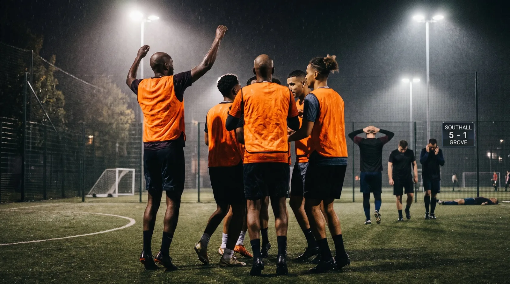
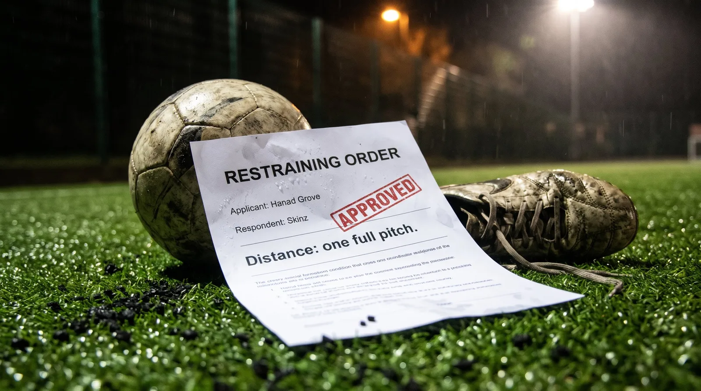

Southall Win 5–1 as Debutants Shine, Westway Finds a Hiding Place and Hanad's Ball Is Still Missing
A one-sided night at Phoenix. Three new signings walked in. Southall walked away with the points. Grove walked home in silence.

Southall whitewash Grove 5–1Match report
This was not a contest. It was a public demonstration. Southall ran Grove off the pitch and back to the car park.
The one game Grove won is now under review as a "statistical accident."
Grove captain Sudz was asked for a response after the game. He said: "No comment." He then left the building faster than any Grove player had moved all night.
Search party sent for Hanad Grove's shootingBreaking
Hanad Grove took 50 shots. Two went in. One ball is still missing.
Local police joined the search at 10:15pm. A dog unit was called in at 10:40pm. The ball was last seen heading towards Heathrow at an altitude of 30,000 feet.
Hanad Grove told reporters he was "testing the wind." Air traffic control has asked him to file a flight plan before next Thursday.
Westway's miracle injuryInjury news
Westway started the game for Grove, fit and full of confidence.
Then Grove started to lose. At that exact moment, Westway picked up a mysterious injury. He could not run. He could not tackle. But he could, it turns out, play in goal.
The kitchen got hot, so Westway moved to the walk-in fridge. No physio has seen the injury. No scan has found it. The club doctor has called it "the first injury in medical history that only appears when you are 3–0 down."
Ahmed PB and Skinz: the clean-up crewDefence
Ahmed PB and Skinz ran the Southall back line like a council bin service that actually turns up.
They swept up every attack. They bagged it. Then they went up the other end and dumped a few in the net.
Skinz tackled Hanad Grove so many times that Hanad Grove has now applied for a restraining order. His legal team is also asking for Skinz to be banned from the same postcode. The court date is set for next Thursday, 8:30pm, at Phoenix.

Three debuts, one man of the matchNew signings
Southall gave debuts to Kenya, Hassan Van Dijk and Ahmed B. All three looked like they had played together for years.
Hassan Van Dijk lived up to the name. He walked around the box like he owned the freehold. Kenya fitted in from the first whistle. Nobody told him it was his first game, and he did not ask.
But the night belonged to Ahmed B. Man of the match on his debut. Fans are already asking for a statue. The club has offered a Tesco meal deal instead.
Grove look for answersWhat's next
Grove now face a long week. Sudz is said to be "reviewing the tactics," which means nobody knows what the tactics were.
Southall will go into next Thursday as favourites. Hanad Grove will go in with a GPS tracker on the ball. Westway will go in with a doctor's note, already signed.